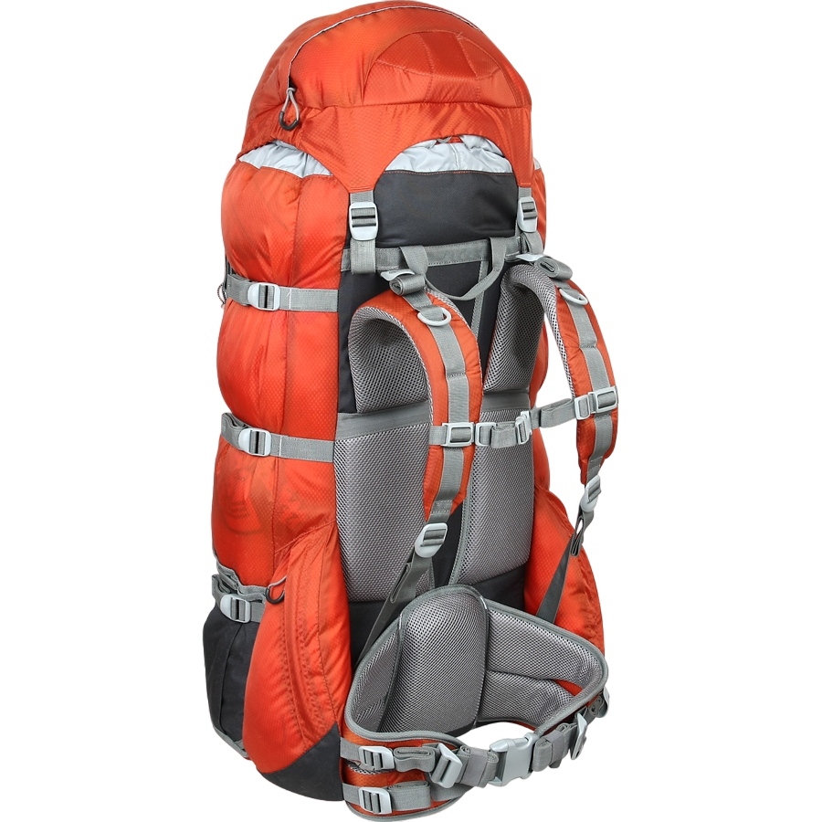
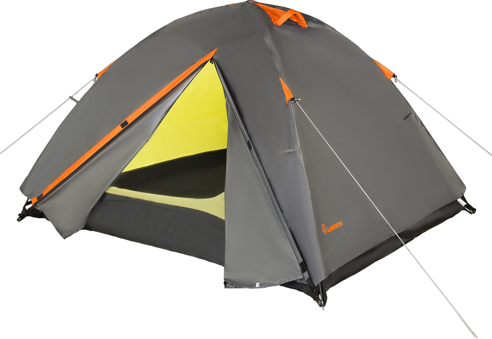
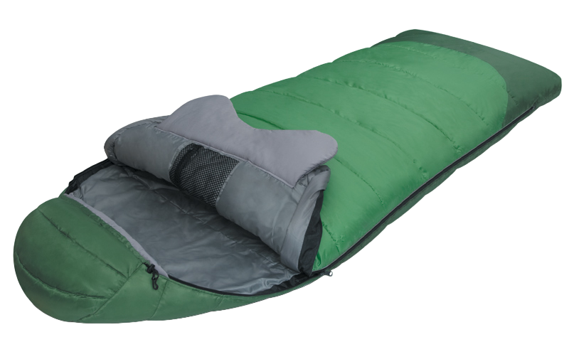
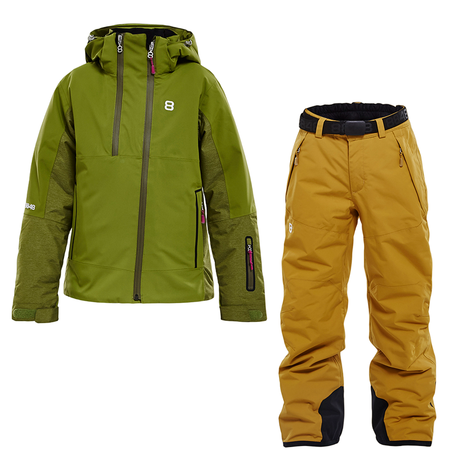
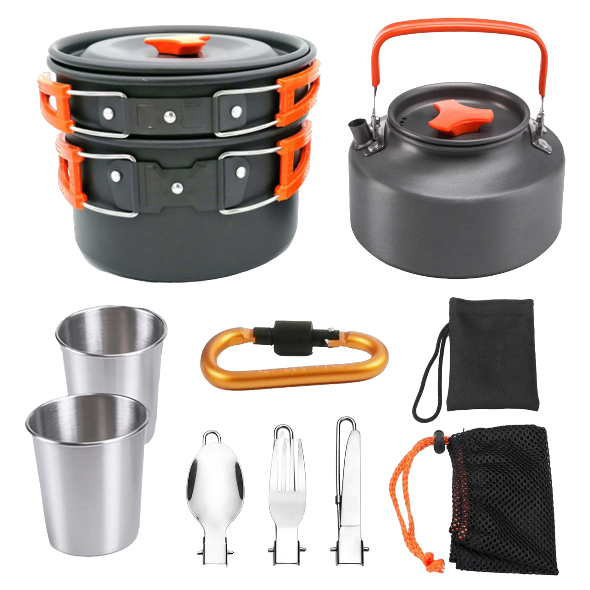
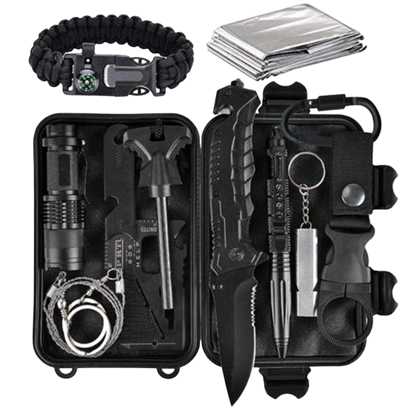

Снаряжение
Все что нужно взять с собой
Рюкзак
Выбор рюкзака для пешеходного туризма важен, чтобы обеспечить комфорт и удобство во время преодоления больших расстояний. Вот несколько важных факторов, которые следует учесть при выборе рюкзака:
Вместимость и объем: Размер рюкзака должен соответствовать вашим потребностям. Определите, сколько вещей вы планируете взять с собой на поход, и выберите рюкзак с соответствующим объемом. Обычно рекомендуется выбирать рюкзак с объемом от 40 до 70 литров.
Распределение нагрузки: Рюкзак должен обеспечивать равномерное распределение нагрузки на спину. Имейте в виду, что большая часть веса должна быть сосредоточена на бедрах, а не на плечах. Поэтому выбирайте рюкзак с подкладкой на пояснице и регулируемыми лямками для более точной настройки.
Конструкция и материалы: Рюкзак должен быть изготовлен из прочных и водонепроницаемых материалов, чтобы выдерживать сложные условия в походах. Обратите внимание на качество швов, молнии и прочность материалов.
Комфорт и эргономика: Рюкзак должен быть удобным для ношения на длительные расстояния. Подушечки на спине и регулируемые лямки помогут снизить давление и обеспечить комфорт. Также проверьте, есть ли в рюкзаке система вентиляции, чтобы предотвратить перегрев спины.
Дополнительные функции и аксессуары: Рюкзаки могут иметь различные дополнительные функции, такие как карманы на молнии, сетчатые карманы для бутылок с водой, отделения для спальника и многое другое. Подумайте о том, какие функции и аксессуары будут вам полезны во время походов.
Также рекомендуется примерить несколько рюкзаков перед покупкой, чтобы убедиться, что они подходят вам по размеру и комфорту.
Палатка
Выбор палатки для пешеходного похода играет важную роль в обеспечении комфорта и безопасности во время ночевки. Вот что нужно учесть при выборе палатки:
Вместимость: Определите, сколько людей будет использовать палатку. Палатки обычно имеют указанное количество спальных мест, но помните, что они могут быть узкими. Если вы собираетесь использовать палатку вдвоем, рекомендуется выбирать палатку на одно спальное место больше, чем вам нужно.
Вес и компактность: Если вы планируете длительные походы, вес и компактность палатки становятся важными. Ищите легкие и компактные модели, которые можно легко упаковать в рюкзак. Однако помните, что более легкие палатки могут быть менее прочными и менее устойчивыми к погодным условиям.
Сезонность: Учтите, в каких погодных условиях вы планируете использовать палатку. Существуют палатки для трех сезонов (весна, лето, осень) и четырех сезонов (включая зиму). Палатки для четырех сезонов обеспечивают лучшую защиту от холода, снега и ветра, но они могут быть тяжелее и дороже.
Прочность и водонепроницаемость: Проверьте материалы и качество швов палатки. Они должны быть прочными и водонепроницаемыми, чтобы защитить вас от дождя и влаги. Палатка с двойным слоем ткани может быть более прочной и лучше защищать от ветра.
Вентиляция: Убедитесь, что палатка имеет хорошую систему вентиляции, чтобы предотвратить конденсацию и обеспечить циркуляцию воздуха. Это особенно важно во время сырой погоды или влажных условий.
Установка и удобство использования: Проверьте, насколько легко и быстро можно установить палатку. Лучше выбрать модель с интуитивно понятной системой крепления и достаточным пространством для комфортного размещения.
Спальник
Выбор спальника для пешеходного туризма также является важным аспектом для обеспечения комфорта и тепла во время ночных привалов. Вот факторы, которые следует учесть при выборе спальника:
Температурный рейтинг: Спальники обычно имеют указанный температурный рейтинг, который указывает на их способность обеспечивать тепло в определенных условиях. Выберите спальник с температурным рейтингом, соответствующим предполагаемым погодным условиям во время вашего похода. Если вы собираетесь путешествовать в прохладную погоду, выберите спальник с нижним температурным рейтингом.
Вес и компактность: Если вы планируете долгие походы, вес и компактность спальника очень важны. Ищите легкие и сжимаемые модели, которые можно легко упаковать в рюкзак. Однако помните, что более легкие спальники могут быть менее теплыми и менее прочными.
Размер и форма: Учтите свои предпочтения по размеру и форме спальника. Существуют узкие спальники, предназначенные для экономии веса, и более просторные модели, которые обеспечивают больше свободы движений. Выберите спальник, который подходит вам по размеру и предоставляет достаточно места для комфортного сна.
Материалы и изоляция: Проверьте материалы, используемые в спальнике, и его изоляционные свойства. Качественные спальники обычно используют синтетические или пуховые наполнители для обеспечения тепла и комфорта. Синтетические спальники лучше справляются с влагой, в то время как пуховые спальники обеспечивают более высокую теплоизоляцию.
Конструкция и дополнительные функции: Рассмотрите конструкцию спальника и наличие дополнительных функций, таких как капюшон, встроенная подушка или возможность соединения двух спальников. Эти функции могут добавить комфорта и удобства во время сна.
Одежда
Подбор правильной одежды для пешеходного похода имеет большое значение, чтобы обеспечить удобство и защиту во время активного отдыха. Вот несколько рекомендаций, которые помогут вам подобрать подходящую одежду:
Погодные условия: Учтите ожидаемую погоду во время похода. Если предполагается теплая и солнечная погода, выберите легкую и воздухопроницаемую одежду, чтобы избежать перегрева. В прохладную или дождливую погоду, выберите слоистую одежду, которая будет обеспечивать изоляцию и защиту от ветра и влаги.
Слоистый подход: Рекомендуется носить несколько слоев одежды, чтобы можно было регулировать теплоизоляцию в соответствии с изменяющимися условиями. Основной слой должен быть воздухопроницаемым и быстросохнущим, чтобы отводить влагу от тела. Следующий слой должен обеспечивать теплоизоляцию, например, флисовая или поларфлисовая кофта. Верхний слой должен защищать от ветра и влаги, например, ветрозащитная и водонепроницаемая куртка.
Функциональность и комфорт: Выбирайте одежду, которая обеспечивает свободу движений и комфорт. Оптимально подобранные брюки или шорты, а также рубашка или футболка из дышащих материалов помогут вам чувствовать себя комфортно во время похода.
Защита от солнца и насекомых: Важно защититься от солнечных лучей и насекомых. Используйте шляпу или кепку, солнцезащитные очки и солнцезащитный крем для защиты от вредного воздействия солнца. Для защиты от насекомых рекомендуется использовать репелленты и одежду с интегрированной защитой от насекомых.
Подходящая обувь: Выберите удобную и подходящую обувь для похода. Походные ботинки или кроссовки должны обеспечивать поддержку стопы, хорошую амортизацию и протектор для устойчивости на неровной местности. Не забудьте носить носки из влагоотводящего материала, чтобы предотвратить образование мозолей и волдырей.
Дополнительные аксессуары: Рассмотрите необходимость дополнительных аксессуаров, таких как перчатки, шарф или головной убор, которые могут быть полезны в зависимости от погодных условий и типа маршрута.
Помните, что одежда должна быть функциональной, удобной и соответствовать условиям похода. Также стоит учесть ваши личные предпочтения и особенности местности, в которой вы собираетесь ходить.
Посуда
В пешеходном походе правильный выбор посуды играет важную роль, так как она должна быть легкой, компактной и функциональной. Вот несколько рекомендаций по выбору посуды для пешего похода:
Котелок или сковорода: Одна из основных вещей, которую нужно взять с собой, это котелок или сковорода. Они должны быть легкими и иметь небольшой объем, но в то же время достаточно вместительными для приготовления пищи. Выбирайте посуду из алюминия или титана, так как они обычно обладают легким весом и хорошей теплопроводностью.
Кружка или чашка: Возьмите с собой легкую и прочную кружку или чашку для приема пищи и питья. Предпочтение отдавайте посуде из пластика или легкого металла, чтобы она не добавляла лишний вес в рюкзак.
Ложка, вилка, нож: Вам понадобятся основные столовые приборы для еды. Выбирайте компактные и легкие варианты, такие как многофункциональные столовые приборы или складные вилки и ложки.
Губка и моющее средство: Не забудьте взять губку и моющее средство для мытья посуды. Это поможет вам поддерживать гигиену и чистоту во время похода. Выбирайте компактные и быстро сохнущие варианты.
Другие необходимости: В зависимости от ваших предпочтений и типа похода, также может потребоваться некоторая дополнительная посуда, такая как крышка для котелка, нож для открывания банок и тому подобное.
Важно помнить, что выбор посуды зависит от ваших индивидуальных потребностей и предпочтений, а также от типа еды которую вы берете с собой.
Другие важные предметы
Перед походом вы также должны подготовить некоторое дополнительное снаряжение для лагеря:
Фонарик или головной фонарь: В походе может понадобиться источник света, особенно при движении в темное время суток или в пещерах. Фонарик или головной фонарь помогут вам ориентироваться и выполнять задачи в ночное время.
Топор и пила: Выбирайте пилу и топор исходя из их функциональности и веса. Они должны быть достаточно надежными и прочными, чтобы не подвести вас на протяжении всего похода. Также убедитесь, что ни будут достаточно мащнымы для добычи дров в условиях похода.
Горелка или кемпинговая плита: Выбирайте горелку или плиту, которая легкая, компактная и безопасная в использовании. Обратите внимание на тип топлива, которое они используют, и убедитесь, что у вас есть достаточное количество топлива для вашего похода.
Зажигалка или спички для разведения костра: Не забудьте взять с собой нестолько коробков спичек или зажигалок для разведения костра. Также позаботьтесь о герметичной упаковке, чтобы не зажигать огонь линзой от очков.
Это далеко не все необходимое для вашего похода, поэтому советуем получить рекомендации от опытных туристов, также вы всегда можете попросить совета о сняряжении у нас.